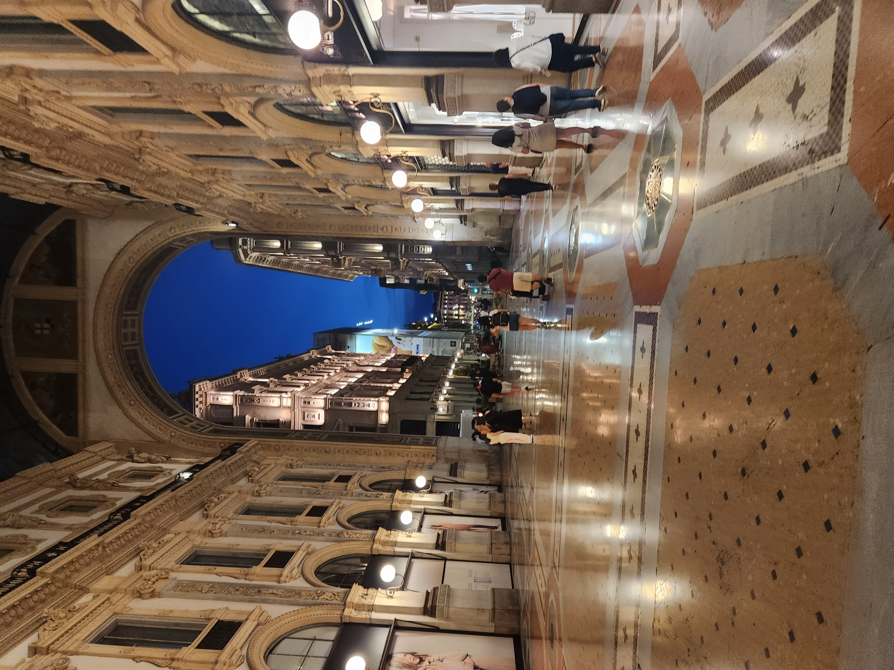

- 나폴리
- 로마
- 피렌체
- 베네치아
- 밀라노
7/7
밀라노
아침에 일어나서 밥을 먹고 기차를 타고 밀라노로 이동했다.
확실히 밀라노는 돈이 많은 도시라서 그런지 중부, 남부 도시들과 달리 확연하게 세련되었다.
 우선 점심을 먹고, 밀라노 대성당을 갔다. 옥상을 올라가봤는데 밀라노 시내가 한눈에 보였다.
우선 점심을 먹고, 밀라노 대성당을 갔다. 옥상을 올라가봤는데 밀라노 시내가 한눈에 보였다.
그 다음에는 레오나르도 다 빈치 국립과학박물관을 갔다.

그리고 시내 산책을 좀 하다가 비토리오 에마누엘레 2세 갤러리아를 갔다.
저녁을 먹고, 핸드폰으로 킥보드를 빌려서 타고 돌아다니면서 야경을 즐겼다. 재미있었다.
7/8
코모,벨라지오
밀라노 둘째날에는 밀라노 북쪽에 있는 소도시인 코모와 벨라지오를 갔다.
우선 코모 시를 갔다. 평화로운 분위기도 좋았고 코모 호수가 정말 예뻤다.
 점심을 먹고, 버스를 타고 호수 옆 도로를 달려서 벨라지오를 갔다.
점심을 먹고, 버스를 타고 호수 옆 도로를 달려서 벨라지오를 갔다.
정말 이렇게 아름다운 곳은 태어나서 처음 보는 것 같다.
풍경을 즐기고 난 후, 배를 타고 바렌나로 향했다. 거기도 정말 아름다웠다.
저녁을 먹고, 기차를 타고 밀라노 시내로 돌아와서 잠을 잤다.
7/9
비행기를 타고 인천으로 돌아왔다. 정말 뜻깊은 여행이였다. 평생 잊지 못할 것이다.